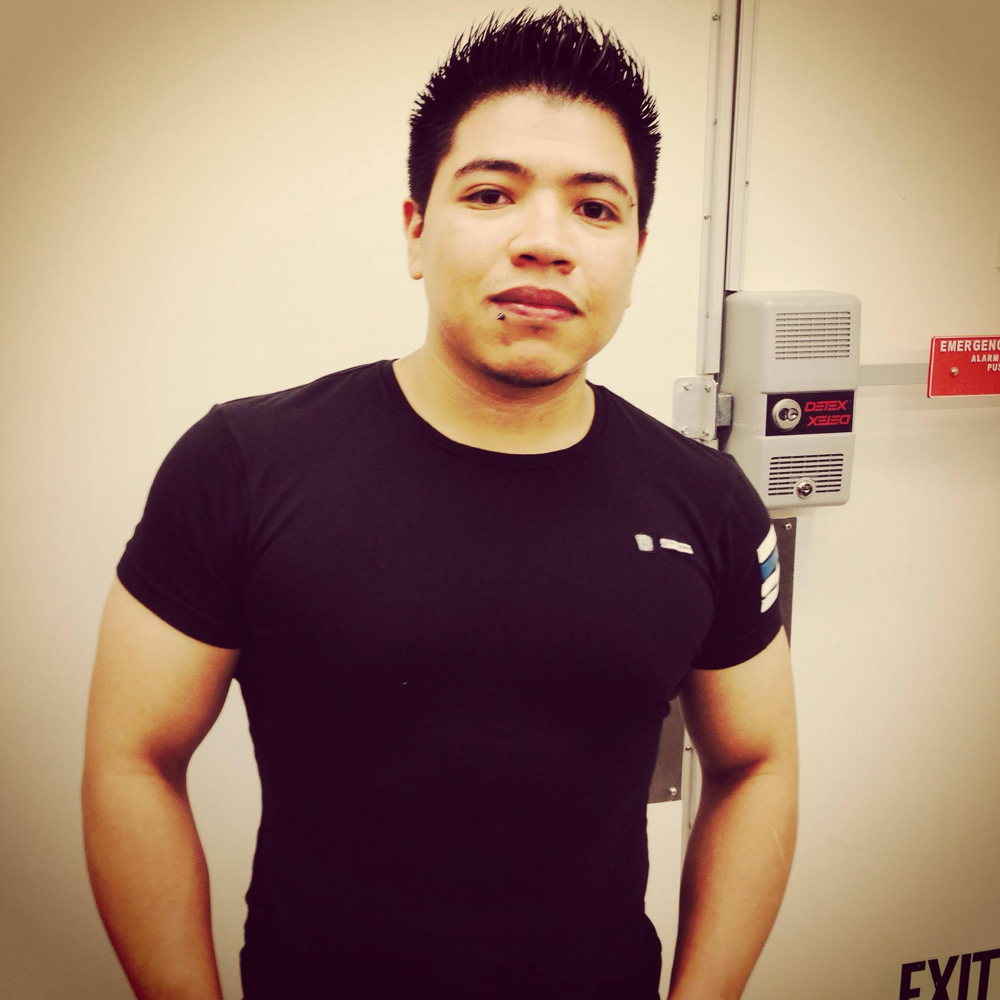

293e. 10th street 1st floor, New York, NY. 10009
1 (646)4042764

Hi im Eduardo i love good content, smart marketing and creative comunity
building. I'm almost always smiling. :)
Work Experience:
- Retail sales 3 years
- Bartending 2 years
- waiter experince 4 years
- cheft asistent 2 years